폐기물처리산업기사 (2011-06-12 기출문제)
1과목: 폐기물개론
1. 50ton/hr 규모의 시설에서 평균크기가 30.5cm인 혼합된 도시폐기물을 최종크기 5.1cm로 파쇄하기 위해 필요한 동력은? (단, 킥의 법칙 적용, C = 13.6 kWㆍhr/ton)
- 약 1020kW
- 약 1120kW
- 약 1220kW
- 약 1320kW
(정답률: 알수없음)

2. 파이프라인 수송에 관한 설명으로 옳지 않은 것은?
- 잘못 투입된 물건은 회수하기가 곤란하다.
- 쓰레기 발생밀도가 높은 지역에서는 현실성이 떨어진다.
- 사고 발생시 시스템 전체가 마비되어 대체 시스템으로의 전환이 필요하다.
- 조대 쓰레기는 파쇄, 압축 등의 전처리를 해야 한다.
(정답률: 알수없음)
3. 어떤 도시에서 발생하는 생활폐기물을 15명의 미화원이 수거하고 있다면 이 도시의 수거효율(MHT)은? (단, 연간 생활폐기물 발생량 = 40,000톤, 미화원의 하루 근무시간 = 10시간, 365일 작업)
- 1.13
- 1.23
- 1.37
- 1.43
(정답률: 알수없음)
4. 매립지의 합성차수막 중 LDPE & HDPE의 장단점으로 가장 거리가 먼 것은?
- 접합상태가 불량하다.
- 유연하지 못하여 구멍 등 손상을 입을 우려가 있다.
- 온도에 대한 저항성이 높다.
- 대부분의 화학물질에 대한 저항성이 높다.
(정답률: 알수없음)
5. 트롬멜 스크린의 임계속도(nc)를 구하는 식으로 옳은 것은? (단, g : 중력가속도, r : 스크린 반경)
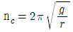
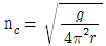
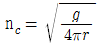
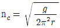
(정답률: 알수없음)
6. 적환장을 설치하는 경우와 가장 거리가 먼 것은?
- 슬러지수송이나 공기수송방식을 사용할 경우
- 불법투기가 발생할 경우
- 작은 용량의 수집차량을 사용할 경우
- 고밀도 거주지역이 존재할 경우
(정답률: 알수없음)
7. 약간 경사진 판에 진동을 줄 때 무거운 것이 빨리 판의 경사면 위로 올라가는 원리를 이용한 것으로 Pneumatic Table 이라고도 하는 것은?
- Stoners
- Flotation
- Separators
- Secators
(정답률: 알수없음)
8. 수거대상 인구가 1200명인 지역에서 1주 동안의 쓰레기 수거상태를 조사하여 다음 표와 같은 결과를 얻었다. 이 지역의 1인 1일당 쓰레기 발생량은 약 몇 kg 인가?
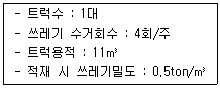
- 1.21kg
- 1.82kg
- 2.38kg
- 2.62kg
(정답률: 알수없음)
9. 함수율 80%인 슬러지 500g을 완전건조 시켰다. 이 때 건조된 슬러지의 중량은? (단, 슬러지의 비중은 1.0)
- 100g
- 200g
- 300g
- 400g
(정답률: 알수없음)
10. 연속적으로 변화하는 자장 속에 비자성이며, 전기전도성이 좋은 구리, 알루미늄, 아연 등을 넣어 금속 내에 소용돌이 전류를 발생시켜 생기는 반발력의 차를 이용하여 분리하는 선별장치는?
- 정전기선별장치
- 자력선별장치
- 와전류선별장치
- 비중선별장치
(정답률: 알수없음)
11. 다음은 폐기물 발생량 예측방법이다. ( )안에 가장 적합한 것은?
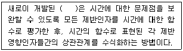
- 물질수지모델법
- 경향법
- 동적 모사모델법
- 다중회귀모델법
(정답률: 알수없음)
12. 인구 100,000명인 중소도시에서 1인 1일 쓰레기 배출량은 1.2(kg/인ㆍ일)이다. 운반차량(적재용량 10m3, 쓰레기 밀도 750kg/m3) 1대를 이용하여 운반할 때, 이 차량의 하루 운행 횟수는? (단, 기타 사항은 고려하지 않음)
- 13회
- 14회
- 15회
- 16회
(정답률: 알수없음)
13. 쓰레기의 압축 전 밀도가 0.45ton/m3이었던 것을 압축한 결과 0.65ton/m3로 되었다. 이 때 부피 감소율은 몇 %인가?
- 약 31%
- 약 37%
- 약 41%
- 약 47%
(정답률: 알수없음)
14. 파쇄기에 관한 설명으로 옳지 않은 것은?
- 압축파쇄기로 금속, 고무, 연질플라스틱류의 파쇄는 어렵다.
- 충격파쇄기로 대개 왕복식을 사용하며 유리나 목질류 등을 파쇄하는데 이용된다.
- 전단파쇄기는 충격파쇄기에 비해 파쇄속도가 느리고 이물질의 혼입에 대하여 약하다.
- 압축파쇄기는 파쇄기의 마모가 적고 비용이 적게 소요되는 장점이 있다.
(정답률: 알수없음)
15. 수거노선을 설정할 때 유의할 사항으로 옳지 않은 것은?
- 가능한 한 지형지물 및 도로 경계와 같은 장벽을 사용하여 간선도로 부근에서 시작하고 끝나도록 한다.
- 가능한 한 시계방향으로 수거 노선을 정한다.
- 발생량이 아주 많은 발생원은 하루 중 가장 나중에 수거한다.
- 발생량이 적으나 수거빈도가 동일하기를 원하는 적재 지점은 가능한 한 같은 날 왕복내에서 수거한다.
(정답률: 알수없음)
16. 함수율이 80%이며 건조고형물의 비중이 1.42인 슬러지의 비중은? (단, 물의 비중은 1.0으로 한다.)
- 1.021
- 1.063
- 1.127
- 1.174
(정답률: 알수없음)
17. 다음 중 LCA(Life Cycle Assessment)의 구성요소가 아닌 것은?
- 개선평가
- 목록분석
- 영향평가
- 수행평가
(정답률: 알수없음)
18. 다음 중 폐기물의 성상분석 절차로 가장 적절한 것은?
- 건조 → 전처리 → 물리적 조성 → 밀도측정 → 분류
- 밀도측정 → 건조 → 전처리 → 분류 → 물리적 조성
- 전처리 → 건조 → 밀도측정 → 물리적 조성 → 분류
- 밀도측정 → 물리적 조성 → 건조 → 분류 → 전처리
(정답률: 알수없음)
19. 다음 선별방법 중 분쇄된 폐기물을 중력이나 탄도학을 이용하여 가벼운 물질(주로 유기물)과 무거운 물질(주로 무기물)로 분리하는 기법은?
- 관성선별
- 광학선별
- 중액선별
- 스토너
(정답률: 알수없음)
20. 탈수기를 통해 함수율 98%인 100kg의 슬러지를 함수율 75% 슬러지로 탈수시켰다면 탈수된 슬러지의 무게는? 단, 슬러지 비중은 1.0)
- 8kg
- 16kg
- 32kg
- 64kg
(정답률: 알수없음)
2과목: 폐기물처리기술
21. 매립지에 매립된 쓰레기양이 1,000ton이고 이 중 유기물 함량이 40% 이며, 유기물에서 가스로의 전환율이 70%이다. 만약 유기물 kg당 1m3의 가스가 생성되고 가스 중 메탄함량이 40% 라면 발생되는 총 메탄의 부피는? (단, 표준상태로 가정)
- 112000m3
- 184000m3
- 236000m3
- 293000m3
(정답률: 알수없음)
22. 어느 매립지의 쓰레기 수용량은 1,635,200m3이고, 수거 대상인구는 100,000명, 1인 1일 쓰레기 발생량은 2.0kg, 매립시의 쓰레기 부피 감소율은 30% 라할 때 매립지의 사용 년수는? (단, 쓰레기 밀도는 500kmg/m3 으로 수거시의 밀도임)
- 6년
- 8년
- 12년
- 16년
(정답률: 알수없음)
23. 유동층 소각로의 장단점이라 볼 수 없는 것은?
- 미연소분 배출로 2차 연소실이 필요하다.
- 가스의 온도가 낮고 과잉공기량이 적다.
- 상(床)으로부터 찌꺼기 분리가 어렵다.
- 기계적 구동부분이 적어 고장율이 낮다.
(정답률: 알수없음)
24. 초기농도가 반으로 줄어드는 시간이 10분이라면 초기농도의 75%가 줄어드는데 걸리는 시간은? (단, 1차 반응 기준)
- 15분
- 20분
- 30분
- 40분
(정답률: 알수없음)
25. 다음 중 탄질비(C/N, 건조질량비)의 값이 가장 작은 것은?
- 톱밥
- 소나무
- 밀짚
- 소(牛)분뇨
(정답률: 알수없음)
26. 연소과정에서 열평형을 이해하기 위하여 필요한 등가비를 옳게 나타낸 것은? (단,
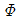
: 등가비)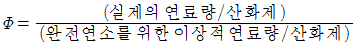
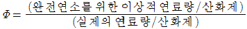
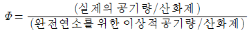
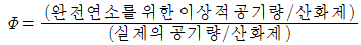
(정답률: 알수없음)
27. 유해 폐기물을 고화 처리하는 방법 중 피막형성법에 관한 설명으로 옳지 않은 것은?
- 낮은 혼합률(MR)을 가진다.
- 에너지 소요가 크다.
- 화재 위험성이 없다.
- 침출성이 낮다.
(정답률: 알수없음)
28. 폐수의 생물학적 처리에서 혐기성 소화법에 관한 설명으로 가장 거리가 먼 것은?
- 호기성 처리보다 운전비가 많이 든다.
- 고농도 폐수처리에 적합하다.
- 호기성 처리에 비해 슬러지 발생량이 적다.
- 회수된 가스를 연료로 사용가능하다.
(정답률: 알수없음)
29. 유효공극율 0.2, 점토층 위의 침출수가 수두 1.5m인 점토 차수층 1.0m를 통과하는데 10년이 걸렸다면 점토 차수층의 투수계수는 몇 cm/sec 인가?
- 5.54 × 10-8
- 5.54 × 10-7
- 2.54 × 10-8
- 2.54 × 10-7
(정답률: 알수없음)
30. 소각로의 화격자 연소율이 340kg/m2ㆍ hr, 1일 처리할 쓰레기의 양이 20,000kg 이다. 1일 8시간 소각하면 필요한 화상(화격자)의 면적은?
- 약 7.4 m2
- 약 8.7 m2
- 약 11.5 m2
- 약 13.8 m2
(정답률: 알수없음)
31. BOD 60,000 mg/L의 축산분뇨를 1차로 25배 희석하고 2차 생물학적 처리로 BOD를 98% 처리한다면 2차 처리수의 BOD는 몇 mg/L 인가? (단, 기타 조건은 고려하지 않음)
- 12
- 24
- 36
- 48
(정답률: 알수없음)
32. BOD농도가 22000mg/L인 분뇨를 전처리 과정을 거쳐 활성슬러지 공법으로 처리하려고 한다. 분뇨의 유입량이 15kL/day, 전처리 과정의 BOD 제거효율이 80%, 포기조의 규격이 폭 4m, 길이 10m, 깊이 4m 라면 포기조의 단위용적당 BOD부하(kg/m3ㆍday)는? (단, 비중은 1.0으로 가정)
- 0.36
- 0.41
- 0.49
- 0.53
(정답률: 알수없음)
33. 연소가스 탈황시 발생된 슬러지처리에 많이 사용되는 고형화 방법으로 가장 적합한 것은?
- 자가 시멘트법
- 시멘트 기초법
- 피막 시멘트법
- 석회 기초법
(정답률: 알수없음)
34. 다음 중 소각 시 다이옥신이 생성될 수 있는 가능성이 가장 큰 물질은?
- 노르말헥산
- 에탄올
- PVC
- 오존
(정답률: 알수없음)
35. 유기물을 열분해 처리할 때 소각처리방법에 비해 가지는 장단점으로 옳지 않은 것은?
- 황 및 중금속이 회분 속에 고정되는 비율이 소각에 비하여 크다.
- 발열반응이므로 외부에서 열을 공급할 필요가 없다.
- 배기가스량이 적어 가스처리 장치가 소형이다.
- 환원성 분위기가 유지된다.
(정답률: 알수없음)
36. 함수율 98%인 슬러지를 농축하여 함수율 92%로 하였다면 슬러지의 부피 변화율은?(단, 비중은 1.0 기준)
- 1/2로 감소
- 1/3로 감소
- 1/4로 감소
- 1/5로 감소
(정답률: 알수없음)
37. 합성차수막 중 PVC에 관한 설명으로 옳지 않은 것은?
- 강도가 약하다.
- 자외선, 오존, 기후 등에 약하다.
- 대부분의 유기화학물질에 약하다.
- 가격이 저렴하고 접합이 용이하다.
(정답률: 알수없음)
38. 60g이 에탄(C2H6)을 완전연소 시키기 위한 이론 공기량은? (단, 표준상태 기준)
- 618 L
- 747 L
- 873 L
- 936 L
(정답률: 알수없음)
39. 매립장 침출수의 차단방법 중 표면차수막에 관한 설명으로 가장 거리가 먼 것은?
- 보수는 매립 전이라면 용이하지만 매립 후는 어렵다.
- 시공시에는 눈으로 차수성 확인이 가능하지만 매립이 이루어지면 어렵다.
- 지하수 집배수시설이 필요하지 않다.
- 차수막의 단위면적당 공사비는 비교적 싸지만 총공사비는 비싸다.
(정답률: 알수없음)
40. 다음 중 슬러지 처리의 일반적인 순서로 가장 적합한 것은?
- 탈수-개량-안정화-농축-소각
- 개량-농축-탈수-안정화-소각
- 농축-안정화-개량-탈수-소각
- 개량-안정화-농축-탈수-소각
(정답률: 알수없음)
3과목: 폐기물 공정시험 기준(방법)
41. 질산은(AgNO3) 8.5g을 200mL의 물에 녹일 경우 N농도는? (단, Ag의 원자량은 108)
- 0.⑤N
- 0.125N
- 0.25N
- 0.5N
(정답률: 알수없음)
42. 대상폐기물의 양이 900톤인 경우 채취시료의 최소수는?
- 24
- 36
- 42
- 52
(정답률: 알수없음)
43. 기체크로마토그래피에 의한 유기인 분석방법으로 옳지 않은 것은?
- 유기인 화합물 중 이피엔, 파라티온, 메틸디메톤, 다이아지논 및 펜토에이트의 측정에 적용된다.
- 정량한계는 0.⑤mg/L 이다.
- 농축장치로 구데르나다니쉬형 농축기를 사용한다.
- 운반기체는 부피백분율 99.999% 이상의 헬륨(또는 질소)을 사용한다.
(정답률: 알수없음)
44. 유기물을 다량 함유하고 있으면서 산화분해가 어려운 시료에 적용되는 시료의 전처리 방법으로 가장 적합한 것은?
- 질산 - 과염소산에 의한 유기물 분해
- 질산 - 과염소산 - 불화수소산에 의한 유기물 분해
- 회화에 의한 유기물 분해
- 질산 - 염산에 의한 유기물 분해
(정답률: 알수없음)
45. 다음 중 폐기물 시료용기에 반드시 기재하여야 하는 사항으로 가장 거리가 먼 것은?
- 채취책임자 이름
- 시료의 양
- 분석방법
- 채취시간 및 일기
(정답률: 알수없음)
46. 수분 40%, 고형물 60%인 쓰레기의 강열감량 및 유기물 함량을 분석한 결과가 다음과 같았다. 이 쓰레기의 유기물 함량(%)은?
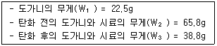
- 약 27
- 약 37
- 약 47
- 약 57
(정답률: 알수없음)
47. 다음 중 취급 또는 저장하는 동안에 밖으로부터의 공기 또는 다른 가스가 침입하지 아니하도록 내용물을 보호하는 용기를 말하는 것은?
- 기밀용기
- 밀폐용기
- 밀봉용기
- 차광용기
(정답률: 알수없음)
48. 강도 lo의 단색광이 정색액을 통과할 때 그 빛의 80%가 흡수되었다면 흡광도는?
- 0.823
- 0.768
- 0.699
- 0.597
(정답률: 알수없음)
49. 이온전극법에 의한 시안 분석방법으로 옳지 않은 것은?
- 액상 폐기물과 고상 폐기물을 pH 12 ∼ 13의 알칼리성으로 조절한 후 시안 이온전극과 비교전극을 사용하여 전위를 측정하고 그 전위차로부터 시안을 정량하는 방법이다.
- 이 시험기준에 의한 폐기물 중에 시안의 정량한계는 0.0⑤ mg/L 이다.
- 시안화합물을 측정할 때 방해물질들은 증류하면 대부분 제거되나 다량의 지방성분, 잔류염소, 황화합물은 시안화합물을 분석할 때 간섭할 수 있다.
- 황화합물이 함유된 시료는 아세트산아연용액(10W/V %) 2 mL를 넣어 제거 한다.
(정답률: 알수없음)
50. 자외선/가시선 분광광도계(흡광광도 분석장치) 측정에 관한 설명으로 옳지 않은 것은?
- 시료액의 흡수파장이 370 nm 이하일 때는 경질유리 흡수셀을 사용한다.
- 가시부와 근적외부의 광원으로는 주로 텅스텐램프를 사용한다.
- 분석 시 넣고자 하는 용액으로 흡수셀을 씻은 다음 셀의 약 80 %까지 넣고 외면의 젖어 있을 때는 깨끗이 닦는다.
- 휘발성 용매를 사용할 때는 흡수셀에 마개를 하고 흡수셀에 방향성이 있을 때는 항상 방향을 일정하게 하여 사용한다.
(정답률: 알수없음)
51. 다음 성분 시험을 위한 폐기물 시료 채취시 시료용기로 무색경질의 유리병을 사용하지 않아도 되는 것은?
- 유기인
- PCBs
- 6가 크롬
- 휘발성 저급 염소화 탄화수소류
(정답률: 알수없음)
52. 폐기물공정시험기준(방법)상 6가 크롬의 분석방법으로 가장 거리가 먼 것은?
- 원자흡수분광광도법
- 이온전극법
- 자외선/가시선 분광법
- 유도결합플라스마-원자발광분광법
(정답률: 알수없음)
53. 폐기물공정시험기준(방법)상 시료를 채취할 때 시료의 양은 1회에 최소 얼마이상 채취하여야 하는가?
- 100g 이상
- 200g 이상
- 500g 이상
- 1000g 이상
(정답률: 알수없음)
54. 1N-수산화나트륨 용액 500mL를 조제하는데 필요한 40W/V% 수산화나트륨 용액 양(mL)은?
- 150
- 100
- 50
- 25
(정답률: 알수없음)
55. 유도결합플라스마-원자발광분광법에 의해 측정할 경우 다음 원소 중 가장 높은 측정파장을 요구하는 것은?
- 크롬
- 비소
- 구리
- 카드뮴
(정답률: 알수없음)
56. 다음은 시료의 분할채취하여 균일화 하는 방법에 관한 설명이다. 어떤 방법에 해당하는가?
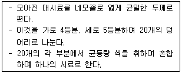
- 교호삽법
- 원추2분법
- 원추4분법
- 구획법
(정답률: 알수없음)
57. 다음 중 휘발성 저급 염소화 탄화수소류의 분석방법으로 가장 적합한 것은? (단, 폐기물 공정시험기준(방법)에 준함)
- Atomic Absorption Spectrophotometry
- UV/Visible Spectrometry
- Inductively Coupled Plasma-Atomic Emission Spectrometry
- Gas Chromatography
(정답률: 알수없음)
58. 다음 중 폐기물 공정시험기준(방법)에서 환원기화장치를 이용하여 측정하는 오염물질은?
- 크롬
- 시안
- 카드뮴
- 수은
(정답률: 알수없음)
59. 다음 총칙에 관한 설명으로 옳지 않은 것은?
- “정확히 취하여” 라 하는 것은 규정한 양의 액체를 홀피펫으로 눈금까지 취하는 것을 말한다.
- 고상폐기물 이라 함은 고형물의 함량이 15% 이상인 것을 말한다.
- 백분율 중 용액 100g 중 성분용량(mL)을 표시할 때는 V/W %로 표시한다.
- 십억분율은 ㎍/m3로 표시한다.
(정답률: 알수없음)
60. 자외선/가시선 분광법에 의한 비소의 측정원리에 관한 설명으로 옳지 않은 것은?
- 시료 중의 비소를 3가 비소로 환원시킨다.
- 청색의 흡광도를 610nm에서 측정하는 방법이다.
- 정량범위는 0.002 ∼ 0.01mg이다.
- 아연을 넣어 발생되는 비화수소를 다이에틸다이티오키르바민산은의 피리딘용액에 흡수시킨다.
(정답률: 알수없음)
4과목: 폐기물 관계 법규
61. 폐기물처리시설의 사후관리업무를 대행할 수 있는 자는? (단, 그 밖에 환경부장관이 사후관리 대행할 능력이 있다고 인정하고 고시하는 자는 고려하지 않음)
- 폐기물관리학회
- 환경보전협회
- 한국환경공단
- 폐기물처리협의회
(정답률: 알수없음)
62. 다른 사람의 사업장폐기물을 재활용하려는 자는 폐기물 재활용 신고서와 첨부서류를 언제까지 시ㆍ도지사에게 제출하여야 하는가?
- 재활용 개시 3일 전까지
- 재활용 개시 7일 전까지
- 재활용 개시 15일 전까지
- 재활용 개시 30일 전까지
(정답률: 알수없음)
63. 폐기물처리시설인 매립시설의 기술관리인이 될 수 있는 자격기준으로 거리가 먼 자는?
- 화공기사
- 일반기계기사
- 건설기계기사
- 전기공사기사
(정답률: 알수없음)
64. 폐기물처리시설의 설치기준 중 고온용융시설의 개별기준으로 가장 거리가 먼 것은?
- 시설에서 배출되는 잔재물의 강열감량은 5% 이하가 될 수 있는 성능을 갖추어야 한다.
- 연소가스의 체류시간은 1초 이상이어야 하고, 충분하게 혼합될 수 있는 구조이어야 한다.
- 체류시간은 섭씨 1200도에서의 부피로 환산한 연소가스의 체적으로 계산한다.
- 시설의 출구온도는 섭씨 1200도 이상이 되어야 한다.
(정답률: 알수없음)
65. 지정폐기물의 분류번호 중 04-00-00 이 나타내는 것은?
- 폐유기용제
- 부식성 폐기물
- 유해물질함유 폐기물
- 폐페인트 및 폐락카
(정답률: 알수없음)
66. 방치폐기물의 처리를 폐기물처리 공제조합에 명할 수 있는 방치폐기물의 처리량 기준으로 옳은 것은? (단, 폐기물처리업자가 방치한 폐기물의 경우)
- 그 폐기물처리업자의 폐기물 허용보관량의 1배 이내
- 그 폐기물처리업자의 폐기물 허용보관량의 1.5배 이내
- 그 폐기물처리업자의 폐기물 허용보관량의 2배 이내
- 그 폐기물처리업자의 폐기물 허용보관량의 3배 이내
(정답률: 알수없음)
67. 폐기물관리법에서 적용하는 용어의 뜻으로 옳지 않은 것은?
- 폐기물감량화시설 : 생산 공정에서 발생하는 폐기물의 양을 줄이고, 사업장 내 재활용을 통하여 폐기물 배출을 최소화하는 시설로서 대통령령으로 정하는 시설을 말한다.
- 지정폐기물 : 사업장 폐기물 중 사람의 건강과 재산 및 주변환경에 위해를 주는 물질이 포함된 폐기물로 대통령령으로 정하는 폐기물을 말한다.
- 사업장폐기물 : 대기환경보전법, 수질 및 수생태계 보전에 관한 법률 또는 소음 ㆍ 진동관리법에 따라 배출시설을 설치 ㆍ 운영하는 사업장이나 그 밖에 대통령령으로 정하는 사업장에서 발생하는 폐기물을 말한다.
- 폐기물처리시설 : 폐기물의 중간처리시설과 최종처리시설로서 대통령령으로 정하는 시설을 말한다.
(정답률: 알수없음)
68. 폐기물재활용신고자가 갖추어야 할 보관시설의 기준은?
- 1일 처리능력의 10일분 이상 60일분 이하의 폐기물을 보관할 수 있는 보관용기 또는 보관시설
- 1일 처리능력의 10일분 이상 30일분 이하의 폐기물을 보관할 수 있는 보관용기 또는 보관시설
- 1일 처리능력의 10일분 이상 20일분 이하의 폐기물을 보관할 수 있는 보관용기 또는 보관시설
- 1일 처리능력의 5일분 이상 10일분 이하의 폐기물을 보관할 수 있는 보관용기 또는 보관시설
(정답률: 알수없음)
69. 다음 중 대통령령으로 정하는 사항이 아닌 것은?
- 폐기물관리법상의 폐기물감량화시설 지정
- 폐기물처리시설의 사후관리이행보증금의 납부시기ㆍ 절차 등에 필요한 사항
- 폐기물관리법에 따른 명령을 위반한 행위에 대한 행정 처분의 기준
- 과징금을 부과하는 위반행위의 종류와 정도에 따른 과징금의 금액 등에 필요한 사항
(정답률: 알수없음)
70. 폐기물관리법상 사업장폐기물을 발생시키는 그 밖의 대통령령으로 정하는 사업장의 범위기준으로 옳지 않은 것은?
- 일련의 공사(건설공사 포함) 또는 작업으로 폐기물을 2톤(공사를 착공하거나 작업을 시작할 때부터 마칠 때까지 발생하는 폐기물의 양을 말한다)이상 배출하는 사업장
- 폐기물을 1일 평균 300킬로그램 이상 배출하는 사업장
- 가축분뇨의 관리 및 이용에 관한 법률에 따른 공공처리 시설
- 하수도법에 따라 공공하수처리시설을 설치 ㆍ 운영하는 사업장
(정답률: 알수없음)
71. 의료폐기물 발생 의료기관 및 시험ㆍ검사기관 기준으로 옳지 않은 것은?
- 「장사 등에 관한 법률」에 따른 장례식장
- 「가축전염병예방법」에 따른 동물검역기관
- 「군통합병원령」에 따라 사단급 이상 군부대에 설치된 의무시설
- 「의료법」에 따라 설치된 기업체의 부속 의료기관으로서 면적이 50제곱미터 이상인 의무시설
(정답률: 알수없음)
72. 다음은 폐기물 인계ㆍ인수 내용 등의 전산처리에 관한 내용이다. ( )안에 알맞은 것은?
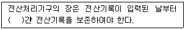
- 1년
- 3년
- 5년
- 10년
(정답률: 알수없음)
73. 의료폐기물 보관의 경우 보관창고, 보관장소 및 냉장시설에는 보관 중인 의료폐기물의 종류, 양 및 보관기간 등을 확인할 수 있는 의료폐기물 보관 표지판을 설치하여야 한다. 이 표지판 표지의 색깔로 옳은 것은?
- 노란색 바탕에 검은색 선과 검은색 글자
- 노란색 바탕에 녹색 선과 녹색 글자
- 흰색 바탕에 검은색 선과 검은색 글자
- 흰색 바탕에 녹색 선과 녹색 글자
(정답률: 알수없음)
74. 다음은 방치폐기물의 처리기간에 관한 내용이다. ( )안에 알맞은 것은?
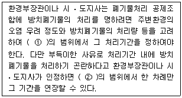
- ① 1개월, ② 1개월
- ① 2개월, ② 1개월
- ① 3개월, ② 1개월
- ① 3개월, ② 2개월
(정답률: 알수없음)
75. 폐기물처리시설 중 환경부령이 정한 “매립사설”의 검사기관으로 옳지 않은 것은?
- 한국환경평가연구원
- 수도권매립지관리공사
- 한국농어촌공사
- 한국건설기술연구원
(정답률: 알수없음)
76. 폐기물처리기본계획에 포함되어야 할 사항과 가장 거리가 먼 것은?
- 폐기물의 처리 현황과 향후 처리 계획
- 폐기물처리업 인가현황 및 향후 인가 계획
- 폐기물처리시설의 설치 현황과 향후 설치 계획
- 폐기물의 종류별 발생량과 장래의 발생 예상량
(정답률: 알수없음)
77. 다음 중 기술관리인을 두어야 할 “대통령령으로 정하는 폐기물처리시설” 에 해당되지 않는 것은?
- 지정폐기물을 매립하는 시설로서 면적이 3,500m2인 시설
- 멸균ㆍ분쇄시설로서 시간당 처리능력이 50kg인 시설
- 압축 ㆍ 파쇄 ㆍ 분쇄 또는 절단시설로서 1일 처리능력이 150ton인 시설
- 사료화 ㆍ 퇴비화 또는 연료와시설로서 1일 처리능력이 5ton인 시설
(정답률: 알수없음)
78. 폐기물처리시설의 종류 중 화학적 처리시설과 가장 거리가 먼 것은?
- 반응시설
- 응집 ㆍ 침전시설
- 증발 ㆍ 농축시설
- 고형화 ㆍ 안정화시설
(정답률: 알수없음)
79. 지정폐기물의 종류 중 유해물질함유 폐기물(환경부령이 정하는 물질을 함유한 것으로 한정한다)의 종류에 해당하는 것으로 거리가 먼 것은?
- 광재(철광원석의 사용으로 인하 고로슬래그를 포함한다)
- 분진(대기오염 방지시설에서 포집된 것으로 한정하되, 소각시설에서 발생되는 것을 제외한다.)
- 폐흡착제 및 폐흡수제(광물유ㆍ동물유 및 식물유의 정제에 사용된 폐토사를 포함한다)
- 폐내화물 및 재벌구이 전에 유약을 바른 도자기 조작
(정답률: 알수없음)
80. 폐기물처리업의 변경허가를 받아야 하는 중요사항에 관한 내용으로 옳지 않은 것은?
- 운반차량(임시차량 포함)의 증차
- 주차장 소재지의 변경(지정폐기물을 대상으로 하는 수집ㆍ운반업만 해당한다)
- 매립시설 제방의 증ㆍ개축
- 폐기물처리시설 소재지나 영업구역의 변경
(정답률: 알수없음)
파쇄 전 총 에너지 = 파쇄 후 총 에너지
파쇄 전 총 에너지 = (평균 크기/2)^2 x 밀도 x 처리량 x 특정 열량
= (30.5/2)^2 x 0.2 x 50 x 13.6
= 1,303,780 kW·hr
파쇄 후 총 에너지 = (최종 크기/2)^2 x 밀도 x 처리량 x 특정 열량
= (5.1/2)^2 x 0.2 x 50 x 13.6
= 54,864 kW·hr
따라서, 필요한 동력은 파쇄 전 총 에너지에서 파쇄 후 총 에너지를 뺀 값이다.
필요한 동력 = (파쇄 전 총 에너지 - 파쇄 후 총 에너지) / 처리 시간
= (1,303,780 - 54,864) / (50 x 1000 / 3600)
= 1220 kW
따라서, 정답은 "약 1220kW"이다.